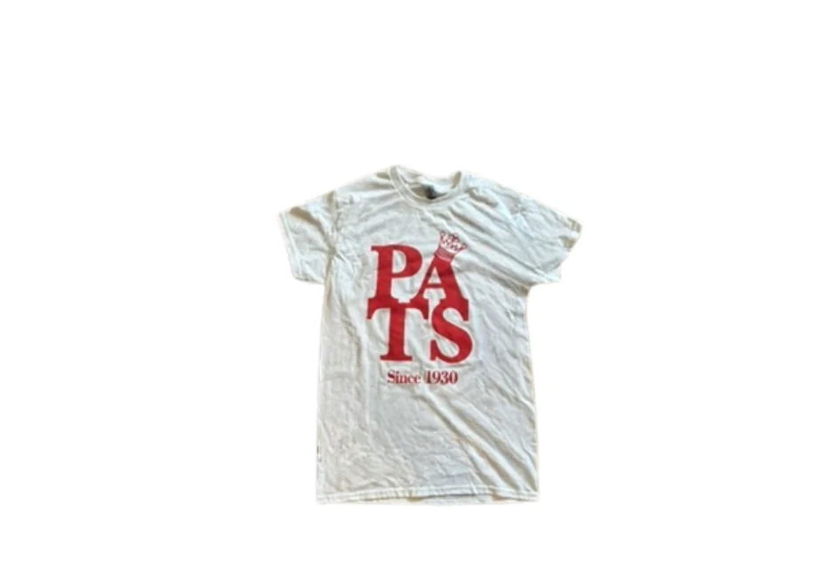
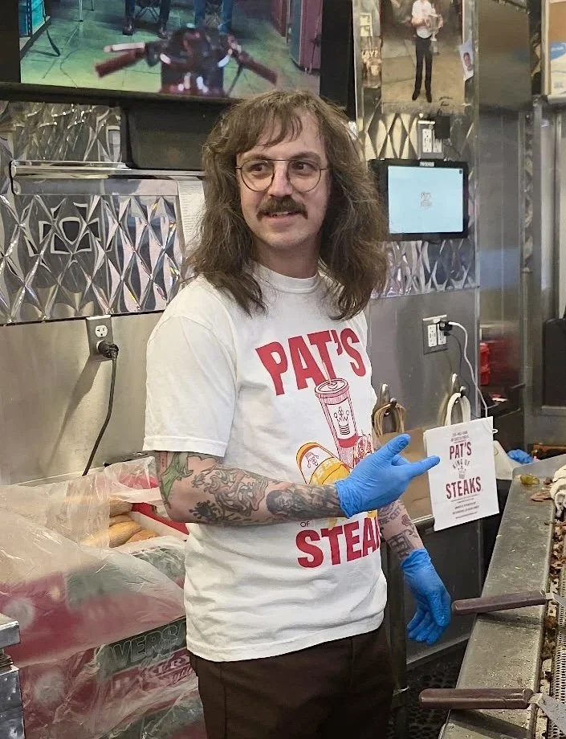
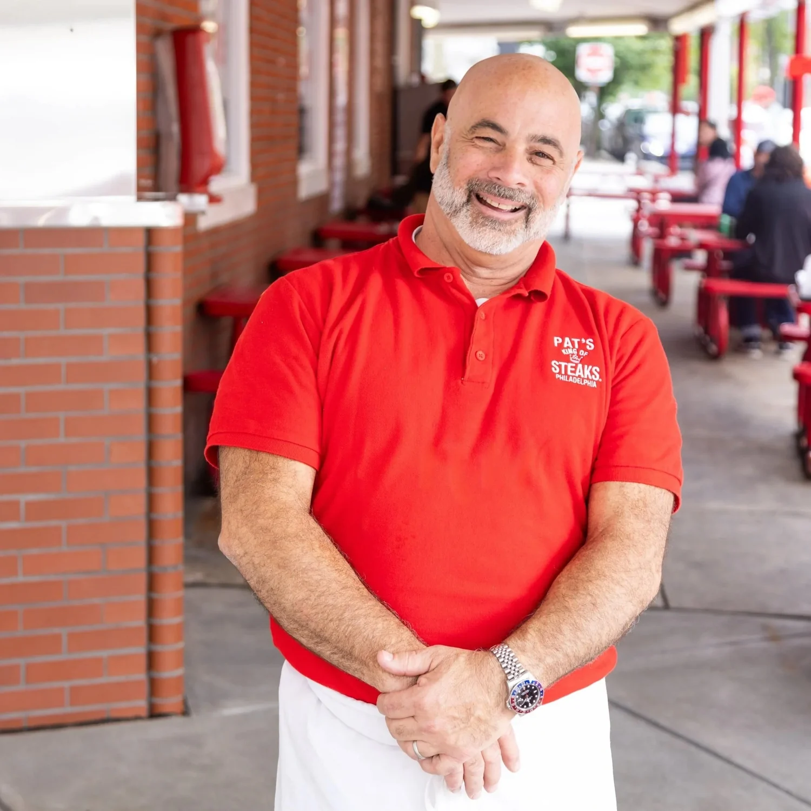
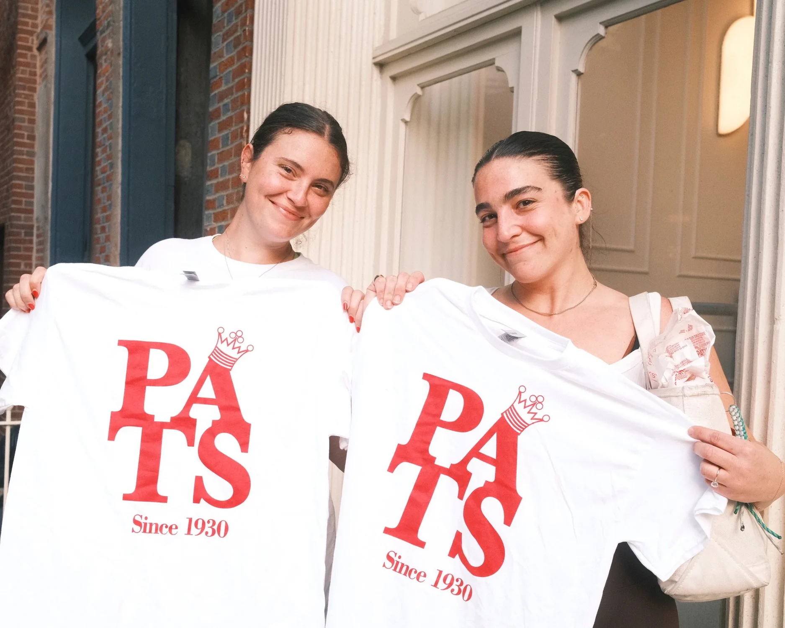
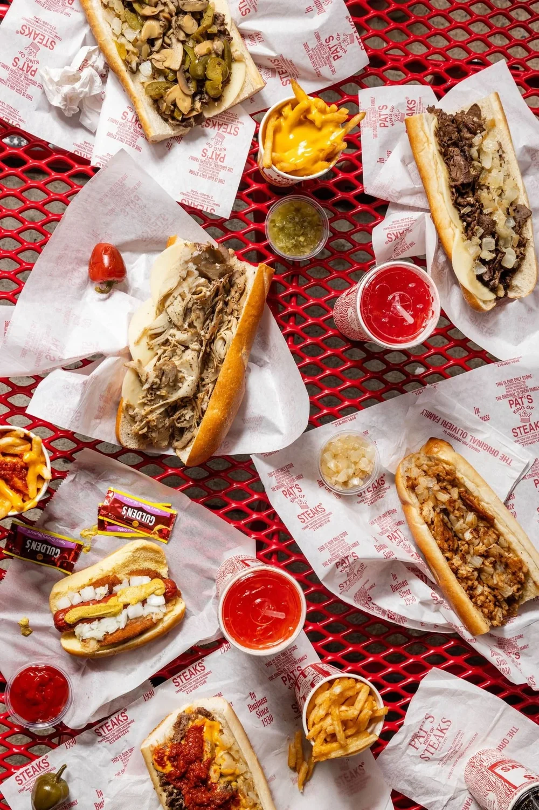
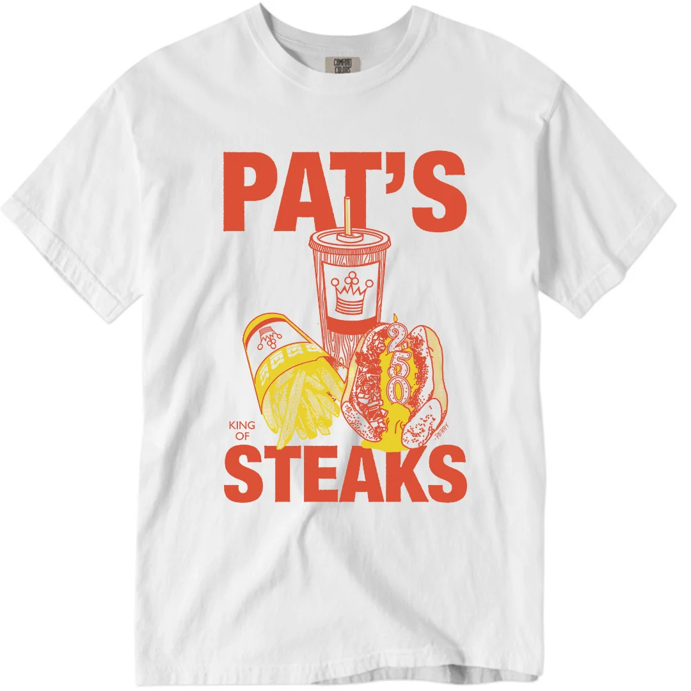
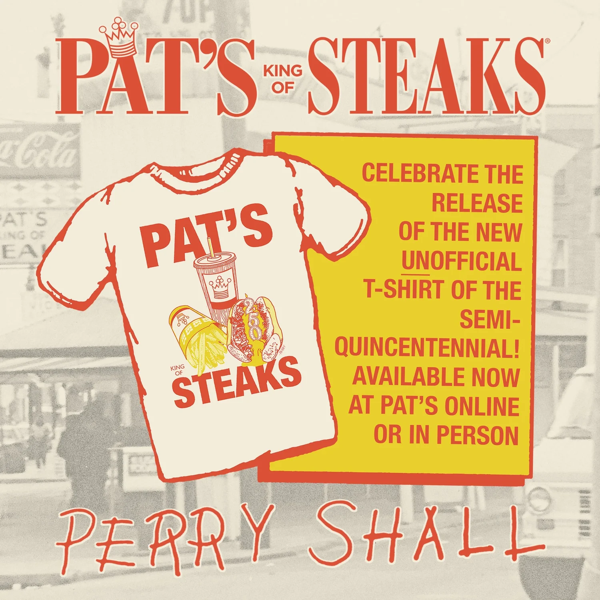
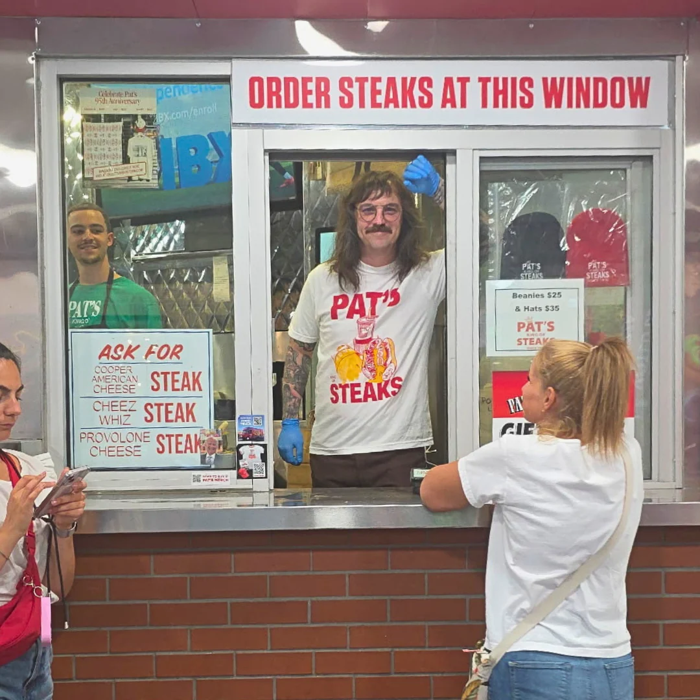
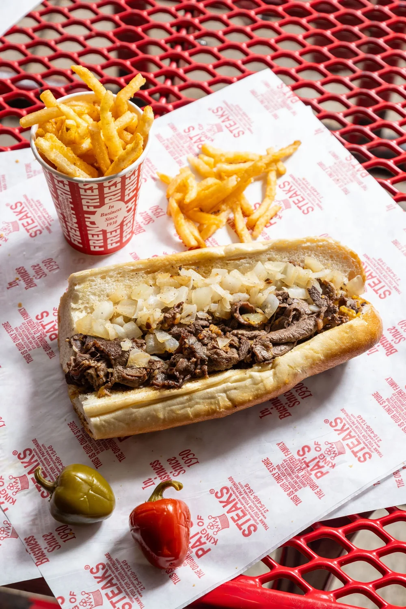

Philadelphia | Restaurant
PRESERVATIONISTS OF AN AMERICAN CULINARY LEGACY.
Open 24/7!

Signature offerings, clearly framed.
Chicken steak and chicken cheesesteak, plus hot dogs, fish cakes, fries and cheese fries
Cheese choices include Cheez Whiz, Provolone, American and Cooper Sharp.
The story
The Creation of the Cheesesteak
Pat Olivieri's 1930 hot-dog stand became the birthplace of the steak sandwich, and the family still serves the original from its only South Philadelphia location.
More than 90 years later, Frankie Olivieri runs the same single South Philadelphia location.

See what makes this place distinct.






More ways into the experience.

How to order
Specify with or without onions, choose a cheese, order steaks at the first window, then fries and drinks at the second.
MenuVisit and contact
Make the next visit easy.
Verified details and direct official links, together in one place.